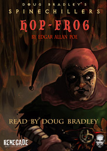

Fue publicado el 17 de mayo del año 1849 y escrita por el estadounidense Edgar Allan Poe, lo curioso es que este cuento fue publicado por primera vez en el año de su muerte, es decir, que esta obra literaria fue la última que escribió, más adelante comentaré el por qué me pareció de esta manera.
Esta es una historia muy interesante debido a que se tratan diversos temas, tales como el odio, la injusticia y la venganza, hace que a medida que se va leyendo nos imaginemos que será lo que pasara más adelante con cada uno de los personajes, es decir, dan ganas de seguir con la lectura para así descubrir lo que en verdad sucede. También pone a pensar al lector y preguntarse sobre que estaba pasando en la vida del escritor o el por qué decidió escribir tal lectura.
Desde el inicio se describe con detalle los aspectos de cada personaje, lo cual permite percibir que el rey y sus ministros eran unas personas a las cuales no les importaba nada, y que solo por tener poder trataban mal al enanito llamado ?Hop-Frog? , el cual da la impresión de ser una buena persona, pero debido a los insultos y las burlas que le hacían el rey y los ministros, él ya no pudo soportar más así que decidió tomar venganza hacia ellos, lo hizo de una manera de broma debido a que a ellos (el rey y sus ministros) les encantaban las bromas, se podría decir que Hop-Frog pensó en darles ?una taza de su propio chocolate? la cual resulto ser mortal para ellos.
Después de realizar su venganza dijo a los presentes que esa había sido su última broma, y decidió huir junto a su amiga dejando atrás todas las vergüenzas y malos tratos que habían recibido por parte del rey y los ministros y así poder ser libres de nuevo
En mi opinión esta es una lectura que nos pone a reflexionar sobre cómo somos como personas , pues hay quienes en un momento de enojo, coraje o ira son capaces de tomar malas decisiones o de hacer algo sin pensarlo, así mismo no hay tampoco que soportar todo eso de personas que se sienten con el poder o el derecho de maltratar y utilizar a otras personas, para así aprovecharse de sus debilidades o de la posición en la que se encuentran, (como el rey que a pesar de que tenía el conocimiento de que Hop-Frog no toleraba el alcohol, pues lo ponía en un estado que parecía que estaba loco o perdido y aun así lo obligo a beberlo solo para divertirse a costa de él) no importándoles lo que esas personas sientan, sino que solo piensan en sí mismos.
Como me pareció tan interesante esta lectura, decidí investigar más acerca de este cuento, y me encontré con distintas especulaciones respecto a las razones por las cuales la escribió, se dice que Edgar Allan Poe la escribió como una forma de venganza literaria, en contra de una escritora y otras personas, así mismo que está fue su última obra literaria, tal como el personaje principal dice una vez que termina con su venganza ?Esta fue mi última broma?, como si este cuento fuera su propia bibliografía, pues hay varios puntos dentro de la obra que es el reflejo de su vida personal.
El primer punto es que el personaje principal fue sacado a la fuerza de su casa y debido a eso fue entregado como regalo para él rey, esto podría estar relacionado en su vida ya que de niño tuvo que ser adoptado y su padre que lo adopto John Allan tenía grandes riquezas, tiene más sentido estas suposiciones cuando fue aclarado que su padre adoptivo impuso en él un nombre distinto al de su bautismo, al igual que le sucedió a Hop-Frog en el cuento. También hay otra relación entre el autor y el personaje principal y es que él también era un poco enano, así como también Edgar Allan Poe era muy sensible al vino pues se enojaba mucho si este era obligado a tomarlo, tal vez todas estas suposiciones acerca del cuento son en realidad la bibliografía del autor. Realmente recomiendo esta lectura, por todo lo comentado anteriormente.
Chuscada: Dicho o hecho de chusco.
Solemmnidad: Acto o ceremonia solemne.
Chanza: Dicho que tiene gracia y agudeza y que generalmente no encierra mala intención.
Fulguraban: espedir un cuerpo luz o brillo Las armaduras de los guerreros fulguraban al sol.
Insana: Que es considerado inmoral u opuesto a la moral establecida.
Cortesanos: Persona que sirve al rey o vive en su corte: los cortesanos felicitaron al rey por el nacimiento de su hijo.
Lino: Materia textil que se saca de los tallos de esta planta.
Borneo: Cambio de dirección de la proa de una embarcación alrededor de su ancla, por la acción del viento o la marea.
Claraboya: Ventana abierta en el techo o en la parte alta de las paredes, por donde entra la luz.
cúpula: Bóveda de curvatura uniforme que se erige sobre una base circular de sección semicircular, apuntada o bulbosa y cubre un edificio o parte de él.